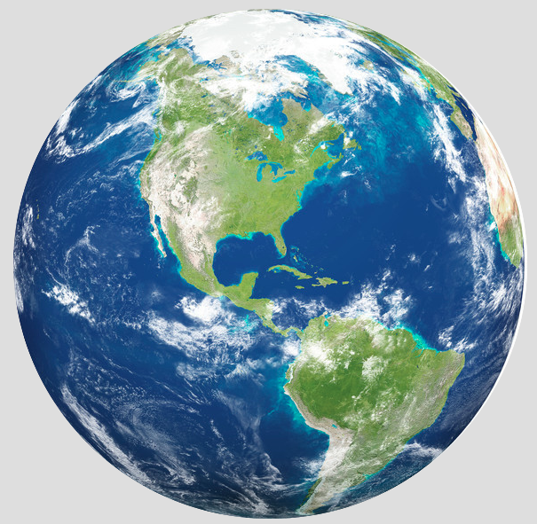

<!DOCTYPE html>
<html lang="en">
<head>
  <meta charset="UTF-8">
  <meta name="viewport" content="width=device-width, initial-scale=1.0">
  <meta http-equiv="X-UA-Compatible" content="ie=edge">
  <link rel="icon" href="../img/WechatIMG12.png">
  <title>地球</title>
  <style>
    html, body, div, span, applet, object, iframe,
    h1, h2, h3, h4, h5, h6, p, blockquote, pre,
    a, abbr, acronym, address, big, cite, code,
    del, dfn, em, img, ins, kbd, q, s, samp,
    small, strike, strong, sub, sup, tt, var,
    b, u, i, center,
    dl, dt, dd, ol, ul, li,
    fieldset, form, label, legend,
    table, caption, tbody, tfoot, thead, tr, th, td,
    article, aside, canvas, details, embed,
    figure, figcaption, footer, header, hgroup,
    menu, nav, output, ruby, section, summary,
    time, mark, audio, video {
      margin: 0;
      padding: 0;
      border: 0;
      text-decoration: none;
      font-family: '微软雅黑','PingFangSC-Regular','PingFang SC','Helvetica Neue','Hiragino Sans GB','WenQuanYi Micro Hei','Microsoft Yahei',sans-serif,serif;
      font-weight: 400;
      color: #222222;
    }
    body {
      width: 100%;
      height: 100%;
      min-width: 1280px;
      margin: 0 auto;
      font-size: 14px;
      background: #fff;
      font-size: '微软雅黑','PingFang SC','Helvetica Neue','Hiragino Sans GB','WenQuanYi Micro Hei','Microsoft Yahei',sans-serif,serif!important;
    }
    ol, ul, li {
      list-style: none;
    }
    /* 样式 */
  .wrapper {
    position: absolute;
    top: 0;
    left: 0;
    right: 0;
    bottom: 0;
  }
  .page-wrapper {
    width: 100%;
    min-width: 350px;
    height: auto;
    background: url(http://pic.qiantucdn.com/58pic/18/06/80/21N58PICBfS_1024.jpg) center center no-repeat;
    background-size: cover;
    overflow: hidden;
  }
  .page-main {
    position: relative;
    width: 260px;
    height: 210px;
    border: 1px solid blue;
    border-radius: 50%;
    margin: 0 auto;
    margin-top: 60px;
    margin-bottom: 60px;
  }
  .page-main .main-subnav {
    position: absolute;
    left: 50%;
    top: 50%;
    animation: move 3s linear infinite;
  }
  @keyframes move {
    0%, 100% {
      transform: translate(25px, 0px);
    }
    25%, 75% {
      transform: translate(0px , 0px);
    }
    50% {
      transform: translate(-25px, 0px);
    }
  }
  .page-main .main-subnav p {
    width: 20px;
    height: 20px;
    margin: -10px;
    background-color: #0ea46e;
    border-radius: 50%;
    animation: rotate 3s linear infinite;
  }
  /* .page-main .main-subnav img {
    width: 40px;
    height: 40px;
    margin: -15px;
    background-color: #0ea46e;
    border-radius: 65%;
    animation: rotate 3s linear infinite;
  } */
  /* 动画效果 */
  @keyframes rotate {
    from {
      transform: rotate(0deg) translate(100px);
    }
    to {
      transform: rotate(360deg) translate(100px);
    }
  }
  </style>
</head>
<body>
  <div class="wrapper">
    <div class="page-wrapper">
      <div class="page-main">
        <div class="main-subnav">
          <!--  -->
          <p></p>
        </div>
      </div>
    </div>
  </div>
</body>
</html>